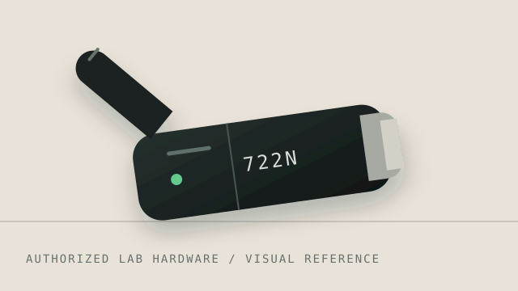

☕
The normal situation
You visit a coffee shop and see a network such as “CoffeeShopWiFi”. You assume it belongs to the business.
An Evil Twin is a rogue wireless access point designed to imitate a legitimate network. This page explains the idea, risks, and defensive practices using a safe visual simulation.
Learn how it works Stay protectedA USB wireless adapter can be useful for authorized network observation and defensive learning. Model revisions, chipset support, and driver features vary, so confirm compatibility with the manufacturer before using one in an isolated lab.
Use boundary: only test equipment and networks you own or have explicit permission to assess.

A simple way to understand the deception.
You visit a coffee shop and see a network such as “CoffeeShopWiFi”. You assume it belongs to the business.
An attacker creates a nearby rogue access point using a name that resembles the legitimate network. A victim may connect without realizing the difference.
Once connected, the attacker may attempt traffic interception, phishing, malicious redirection, or other attacks against vulnerable users and devices.
Verify the network with staff, use encrypted connections, keep devices updated, disable unnecessary auto-connect, and avoid sensitive activity on untrusted networks.
The actual impact depends on the victim's device, applications, encryption, and the attacker's capabilities.
Unencrypted traffic can expose information to an attacker positioned between a device and the Internet.
Users may be directed toward convincing fake pages that attempt to collect credentials or other sensitive information.
Fake portals or malicious content can be used to persuade users to install unsafe software or profiles.
Weakly protected sessions can sometimes be targeted, especially when applications or protocols are not properly secured.
A familiar SSID can create false confidence even though the wireless access point is not operated by the expected organization.
HTTPS, properly configured applications, and end-to-end encryption can significantly reduce what a rogue network can read.
This is a conceptual flow for awareness and authorized lab education.
Victim sees a familiar SSID.
A nearby access point imitates it.
The device associates with the wrong network.
Phishing or traffic attacks may follow.
For a classroom or home cybersecurity lab, reproduce the concept with devices and networks you own or have explicit permission to test.
A practical checklist for everyday users.